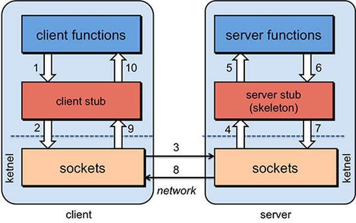
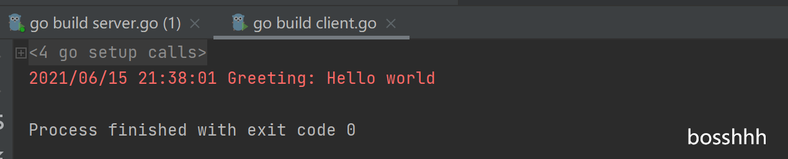

GRPC
首先摘抄一下对rpc(远程过程调用)协议实现的思考，从下面这段话也可以看出，为什么要用ProtoBuf编码了。
首先，要解决通讯的问题，主要是通过在客户端和服务器之间建立TCP连接，远程过程调用的所有交换的数据都在这个连接里传输。连接可以是按需连接，调用结束后就断掉，也可以是长连接，多个远程过程调用共享同一个连接。
第二，要解决寻址的问题，也就是说，A服务器上的应用怎么告诉底层的RPC框架，如何连接到B服务器（如主机或IP地址）以及特定的端口，方法的名称名称是什么，这样才能完成调用。比如基于Web服务协议栈的RPC，就要提供一个endpoint URI，或者是从UDDI服务上查找。如果是RMI调用的话，还需要一个RMI Registry来注册服务的地址。
第三，当A服务器上的应用发起远程过程调用时，方法的参数需要通过底层的网络协议如TCP传递到B服务器，由于网络协议是基于二进制的，内存中的参数的值要序列化成二进制的形式，也就是序列化（Serialize）或编组（marshal），通过寻址和传输将序列化的二进制发送给B服务器。
第四，B服务器收到请求后，需要对参数进行反序列化（序列化的逆操作），恢复为内存中的表达方式，然后找到对应的方法（寻址的一部分）进行本地调用，然后得到返回值。
第五，返回值还要发送回服务器A上的应用，也要经过序列化的方式发送，服务器A接到后，再反序列化，恢复为内存中的表达方式，交给A服务器上的应用

定义服务：
protobuf 定义 ` Service ``及其消息参数
1
2
3
4
5
6
7
8
9
10
11
12
13
14
15
16
17
|
// 定义一个叫HelloService的服务
service HelloService {
// 定义一个叫SayHello的方法，这个方法接受HelloRequest消息作为参数，返回HelloResponse消息
rpc SayHello (HelloRequest) returns (HelloResponse);
}
// 定义HelloRequest消息
message HelloRequest {
required string greeting = 1;
}
// 定义HelloResponse消息
message HelloResponse {
required string reply = 1;
}
|
四类服务方法：
- 单向rpc : 即客户端请求一次，服务器做一次响应
rpc SayHello(HelloRequest) returns (HelloResponse){ }
- 服务端流式rpc : 即客户端请求一次，服务端以数据流的方式源源不断返回
rpc LotsOfReplies(HelloRequest) returns (stream HelloResponse){ }
- 客户端流式rpc
rpc LotsOfReplies(stream HelloRequest) returns (HelloResponse){ }
- 双向流式rpc : 客户端服务端互相通信，类似tcp
rpc LotsOfReplies(stream HelloRequest) returns (stream HelloResponse){ }
Go语言中使用grpc框架
go get -u google.golang.org/grpc
这里列举一个比较简单的例子
- 定义service 和消息类型，命令行生成 *.pb.go文件
1
2
3
4
5
6
7
8
9
10
11
12
13
14
15
16
17
18
19
20
21
22
23
|
syntax = "proto3";
// 定义包名
package proto;
// 定义Greeter服务
service Greeter {
// 定义SayHello方法，接受HelloRequest消息， 并返回HelloReply消息
rpc SayHello (HelloRequest) returns (HelloReply) {}
}
// 定义HelloRequest消息
message HelloRequest {
// name字段
string name = 1;
}
// 定义HelloReply消息
message HelloReply {
// message字段
string message = 1;
}
|
- 命令行生成 *.pb.go文件
protoc -I proto/ --go_out=plugins=grpc:proto proto/helloworld.proto
文件会针对你的Service生成一系列初始化等函数可供调用
- 定义服务端
1
2
3
4
5
6
7
8
9
10
11
12
13
14
15
16
17
18
19
20
21
22
23
24
25
26
27
28
29
30
31
32
33
34
35
36
37
38
39
40
41
42
43
44
45
46
47
48
49
50
51
52
53
|
package main
import (
"log"
"net"
"golang.org/x/net/context"
// 导入grpc包
"google.golang.org/grpc"
// 导入刚才我们生成的代码所在的proto包。
pb "tizi365.com/helloworld/proto"
"google.golang.org/grpc/reflection"
)
// 定义server，用来实现proto文件，里面实现的Greeter服务里面的接口
type server struct{}
// 实现SayHello接口
// 第一个参数是上下文参数，所有接口默认都要必填
// 第二个参数是我们定义的HelloRequest消息
// 返回值是我们定义的HelloReply消息，error返回值也是必须的。
// 这里可以回过头看看 RPC 那篇文章，net/rpc实现也必须是这样的参数
func (s *server) SayHello(ctx context.Context, in *pb.HelloRequest) (*pb.HelloReply, error) {
// 创建一个HelloReply消息，设置Message字段，然后直接返回。
return &pb.HelloReply{Message: "Hello " + in.Name}, nil
}
func main() {
// 监听127.0.0.1:50051地址
// rpc服务的默认端口
lis, err := net.Listen("tcp", "127.0.0.1:50051")
if err != nil {
log.Fatalf("failed to listen: %v", err)
}
// 实例化grpc服务端
s := grpc.NewServer()
// 注册Greeter服务
pb.RegisterGreeterServer(s, &server{})
// 往grpc服务端注册反射服务
reflection.Register(s)
// 启动grpc服务
if err := s.Serve(lis); err != nil {
log.Fatalf("failed to serve: %v", err)
}
}
|
- 定义客户端
1
2
3
4
5
6
7
8
9
10
11
12
13
14
15
16
17
18
19
20
21
22
23
24
25
26
27
28
29
30
31
32
33
34
35
36
37
38
39
40
41
42
43
44
45
46
|
package main
import (
"log"
"os"
"time"
"golang.org/x/net/context"
// 导入grpc包
"google.golang.org/grpc"
// 导入刚才我们生成的代码所在的proto包。
pb "tizi365.com/helloworld/proto"
)
const (
defaultName = "world"
)
func main() {
// 连接grpc服务器
conn, err := grpc.Dial("localhost:50051", grpc.WithInsecure())
if err != nil {
log.Fatalf("did not connect: %v", err)
}
// 延迟关闭连接
defer conn.Close()
// 初始化Greeter服务客户端
c := pb.NewGreeterClient(conn)
// 初始化上下文，设置请求超时时间为1秒
ctx, cancel := context.WithTimeout(context.Background(), time.Second)
// 延迟关闭请求会话
defer cancel()
// 调用SayHello接口，发送一条消息
r, err := c.SayHello(ctx, &pb.HelloRequest{Name: "world"})
if err != nil {
log.Fatalf("could not greet: %v", err)
}
// 打印服务的返回的消息
log.Printf("Greeting: %s", r.Message)
}
|
- output:

grpc 🐂！